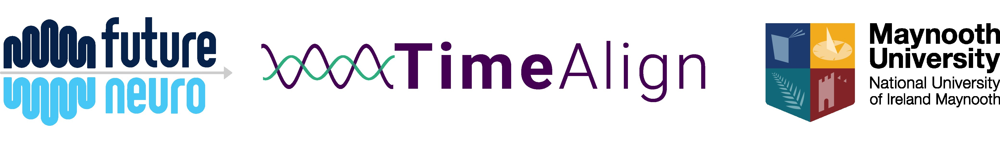

Prof Lorna M. Lopez, Maynooth University
Dr Cathy Wyse, Maynooth University
Mr Jake Kennedy, Maynooth University
Study Contact/Advis
Thank you for your interest in our research study. Please read this information carefully and discuss it with your family if you wish. Take your time to read it and don’t feel under any pressure to decide right away. It is important for you to understand the study fully before you decide to participate or not. If anything is unclear to you, or if you have any questions at all about the study, please don’t hesitate to get in touch with us by email (TimeAlign@mu.ie).
You are invited to participate in this research study which aims to investigate the timing of medication as well as sleep and circadian rhythms in people with epilepsy.
Circadian rhythms are changes in physiology and behaviour that follow a 24-hour cycle. For example, the daily rhythm in body temperature, alertness and the sleep wake cycle are all examples of circadian rhythms. In fact, almost every cell in the human body is regulated by a circadian clock, and this does not depend on the light dark cycle or the timing of food or exercise. Circadian timing has been “hard-wired” into our physiology by evolution so that humans have 24h rhythms by default.
It has been known for centuries that the occurrence of seizures in some people with epilepsy follow daily or monthly patterns. For example, some people only have seizures at night, or at a particular time of day. It is possible that circadian clocks in the brain contribute to these patterns.
Medication is an important aspect of seizure control, and in TimeAlign, we will investigate if variations in the times of day that people with epilepsy take their medication is related to the timing of their seizures.
The overall aim of this project is to assess daily patterns in sleep and circadian timing and the timing of medication in people with epilepsy, and to investigate if any of these patterns match the timing of seizures.
Many people with epilepsy have infrequent seizures, so that long periods of monitoring (several months) are required to capture patterns in their timing. In this project, we will use advances in sensor technology to unobtrusively monitor the timing of sleep, medication and activity in order to minimise the burden on the participants that are happy to participate in our research over long periods of time.
We have asked you to take part because you are a person with epilepsy
that is taking daily anti-epileptic drugs.
To participate you must:
You can not participate if you:
It is important to know that you do not have to take part in this study if you do not wish to. You can change your mind about participating in this study at any time, even after the study has begun. If you decide that you do not want to participate, this will have no effect on your current or future participation in any other research studies. You do not have to provide a reason for deciding not to participate or changing your mind. If you wish to opt out at any point, please contact the research team (Study email: TimeAlign@mu.ie), and we will organise this for you.
You can withdraw at any time and without giving a reason. If you decide to do so, we will immediately remove all of your data from the study, including your sensor, sleep and questionnaire data. Electronic copies of data will be overwritten, and hard copies will be destroyed by incineration.
The studies will be carried out as you undergo your usual activities
over 12 months, you will not be required to come to Maynooth University
at any point. We will give you everything you need to set up the sensors
yourself. We will always give you instructions and all materials and
equipment needed to complete the study and we will always be available
to answer any questions you have about the study.
You will be asked to do the following tasks:
Fit a bedside sensor that monitors movement and environment in your bedroom for 1 week (see image below). The sensor records the following information:
This sensor uses radar to monitor movement and we can use this information to design algorithms that can guess whether you are awake or asleep. We cannot tell what you are doing when you are awake. It records noise levels, not sounds or voices and ambient light. This sensor transmits data via the internet to a cloud platform where we can download your data.
The sensor has its own internet connection and you will not be able to download the data or access the sensor controls. It is unobtrusive and makes no sound, and has no display. If you go on holiday or stay somewhere else overnight, we will ask you to bring the bedside sensor if possible.
Complete some questionnaires about your health, lifestyle and sleep. Questionnaires will take approximately 10 minutes each to complete and there are 3 in total.
Keep a small sensor with your current pill box, or where you keep your medication. You need to press the button each time you take your medication which will record the times. This device has no communication function, it can only record and store time data.
We will ask you to return the device to us in prepaid envelopes so that we can download the data. We will send you a new device at these times. We will keep in touch with you and remind you when it is time to swap devices.
No. It is very important that you do not change anything about how you take your medication because of this study. You must not make any changes to how you take your medication unless advised by your doctor.
The tasks in this study will be arranged at times that suit you. There will need to be 1 week when you are able to use the bedside sensor continuously. It is no problem to take the bedside sensor with you to another location if you need to travel during this time.
After you have read this information sheet, and if you decide that the study is something you would still be interested in, we will have a short conversation (in person, by phone, MS Teams or email) to ensure that you are eligible to participate. This conversation is confidential and the information you give us at this time will not be recorded. If you meet the inclusion criteria, we will then send you information on what is involved and give you time to read this and to ask questions. Next we will ask you to meet again (in person or online, your choice) to give written consent to participate. Then we will enrol you into the study and arrange a 1 week study window that suits you to participate, and send you the sensors with instructions on their use. You will have the names and contact details of the researchers who you can contact at any time during the study, should you have any questions.
To summarise, over the 1 week of the study we will (i) record questionnaire data at the beginning, (ii) continuously record daily movement data using the wrist worn sensors, and the bedside sensor, and (iii) measure the times that you take your medication every day.
No, the sensors only measure movement in space, none of them can acquire images.
No, the sensors record noise levels in decibels, they can’t identify sounds or record speech.
No, none of our sensor have GPS or capacity to identify or record their location.
The sensors record data on movement but it is not possible to identify what someone is doing other than whether they are awake or not. We apply algorithms to the movement data at each timepoint to classify whether the person is asleep or awake – it is categorical information, either awake or asleep, nothing else. The data cannot be used to detect sexual or any other activity nor would we ever attempt to detect anything from the movement data other than the classification of being awake or asleep.
The sensors will only record data from you and not your partner (as long as you are the person closest to the sensor). Your participation in this study does affect your partner as we will record light, sound and temperature data in their bedroom, and we ask you to make sure anyone sharing your bedroom is happy for you to participate.
Medical advances depend on the goodwill of volunteers that participate in research studies, and we believe that you will benefit from knowing you are making a valuable contribution to finding ways to help people with epilepsy. We are very grateful to everyone that participates in our research.
You will receive data from the radar sensors that show how your own sleep patterns and medication timing vary over the week of the study. This will benefit you by helping you to understand more about how you sleep. We will give you this data for your own interest at the end of the study, but we are not medical doctors and we won’t be able to help you understand it.
You will receive a One4All voucher (€20) to thank you for your participation.
There is a possibility that the tests we carry out identify that your sleep patterns are not what we expect to see in a healthy person. If this happens, we will let you know and we will give you copies of the data we collected. We are not medical doctors, so we will not be able to give you any advice but we will recommend that you discuss our findings with your GP.
We have taken great care to identify and address any potential safety concerns, and we do not consider that taking part presents a risk to the participants but we do ask you to pay attention to the following sources of risk. Remember if you are unsure about anything, please feel free to contact our research team at TimeAlign@mu.ie
There is a small possibility that you might develop skin irritation from the wrist worn strap and we will ask you to be vigilant to this, and to remove the strap immediately and withdraw from the study if signs of irritation are detected. All the items we use are medical-grade and we do not anticipate skin irritation to be a serious risk.
There is a chance that the cables and wires of the sensors could be a trip hazard and we ask you to take care when moving near them and to make sure that all ends are tucked away.
With your consent, when we enrol you in the study, we will record your name, address and contact details (email and phone number). We will use your contact details to contact you about the research study, and not for any other reason. This data that can identify is highly confidential and will be destroyed when you have completed the study.
As soon as you have enrolled in the study, you will be assigned a unique study ID code - this is called pseudonymisation. Any information we gather from that point (sensor data and questionnaire data) will be associated with the ID code and not with your name or contact details. This is not only for electronically stored data. For example, questionnaires will be labelled with your unique study IDs and not your name. Only the authorised research team at Maynooth University will have access to the ‘key’ that links your name to your ID code, and this information will be stored on an encrypted file on a password protected computer at Maynooth University. Neither your name nor ID code will be used when reporting the results of this research for publication or presentation; your contribution will be entirely anonymous. In this way, even the researchers working directly with your data will not know which participant it comes from; this link can only be made by retrieving the key.
The only reason we have a key at all is so that we can contact you to collect sensors and follow up with results, and we will destroy the key and all your contact information as soon as possible. This will be when you have completed the study or at the end of TimeAlign (December 2028), whichever comes first.
There are three types of data in this study (i) personal, identifiable data, (ii) personal data, (iii) anonymised data.
The personal, identifiable information that we will collect are your name, address and contact details (phone number and email address). These data can be used to identify you and are highly confidential. They will never be written on any of your research data items such as questionnaires or samples or sensor results. They will be linked to your research data via your study ID number and kept in a locked office or secure network that is separate to the research data stores. This means that even the researchers will not be able to tell the identify of the participants from the research data they are working on. We will delete your identifiable data as soon as the study is over.
The research data that we collect about you includes personal information such as data on sleep, sensor data, lifestyle and health, age and sex, but these data are not unique to you and cannot be used to identify you without access to the ID code key. These data are pseudonymised until the end of the study (or Dec 2028 whichever is first) at which point all identifiable data are deleted and all personal data are anonymised. The personal research data will be identified only by an ID number and will be stored in a secure location on the MU server. Pseudonymised data will not be shared with anyone outside the research team.
Anonymised data means that all connections to your identity have been irretrievably destroyed and there is no way that anyone (not even the researchers) can ever find out that information came from you. We ask your consent to retain this anonymous information indefinitely and to share it with other researchers via scientific repositories. Repositories are public databases that can be accessed by anyone and are very important for progressing science and preventing other scientists repeating work that has already been done. Releasing our research data into the public domain like this means that science will benefit for many years after our project has finished, and that the experiments do not have to be repeated.
If you decide to withdraw from the study, then all data will be destroyed; nothing will be retained for anonymisation in this case. You will be completely removed from the study. If you withdraw we will ensure that our third party processor, VitalThings deletes your pseudonymised data from the sensors, sex and date of birth data. If you complete the study, your data will be anonymised and it will not be possible to withdraw from the study after this point.
The data we collect will be anonymised once the sensors and questionnaires have been returned, so it will not be possible for anyone, including the research team to identify the participants from the datasets. With your consent, we will retain these anonymous datasets indefinitely. These datasets may be used in teaching or research.
No. Following completion of the study or withdrawal from the study, your identifiable personal information including your name, address and contact details will be destroyed. All other data (sensor and questionnaire data) will then be anonymised (it will no longer be linked back to you), and it will not be possible for us or anyone to identify you. For this reason, we cannot return any of your results after anonymization and you will not be able to withdraw, request access, or to make any amendments after the data are anonymised. This anonymised data will be held in Maynooth University and made available in public repositories for indefinite open access.
Only the authorised researchers named above, working in the research team at Maynooth University will have access to your identifiable personal data including your name, address, and contact details. All other data (sensor data, age, biological sex, clinical information and sleep data) are only identifiable by your unique study ID. We will never label your questionnaires or sensor data with your name or contact details. VitalThings and researchers at other universities cannot access your identifiable information. Only the research team at MU can ever find out your identify, and this is only for the purposes of contacting you about the study. As soon as the study is completed all your identifiable information will be destroyed and there is no way that you can ever be linked to study data again.
Your personal information will be kept entirely confidential, and we will exercise our duties in handling your personal data as per the General Data Protection Regulation (GDPR). Protecting your privacy is extremely important to all the research team members at Maynooth University. Personal Identifiers, such as your name or email are never used to label your questionnaires or sensor data. All data will be stored on password protected files on a secure network in Maynooth University. No one outside of the research team in Maynooth University will have access to your name or contact information and all other data will be labelled with your unique study ID.
Although all measures will be taken to protect your privacy, there is a remote risk that a connection to your contact details could be made, e.g., through unauthorised access to servers of premises at Maynooth University. To minimise this risk, any files containing these data are password protected and have restricted access, or are in locked cabinets in locked offices. Any attempt to identify you in this manner would be a legal breach against the permitted use of the research data.
When you have returned the sensors and questionnaires, and the study is complete, your contact details will be incinerated in the case of written records, and electronic data will be reformatted or overwritten by the research team at Maynooth University and all data will be anonymous.
As part of the study your personal data will only be used for scientific research which is in the public interests (Article 6 (e) and Article 9( 2) (j) of General Data Protection Regulation (GDPR)).
Under the GDPR, you are entitled to:
These rights to access to your data are forfeit in this study by the complete anonymisation of the data. Complete anonymisation is to protect the privacy and data security of the participants, but it also means that it is impossible for you to access your data for any reason. We will not record the identity of the participants that provided any specific item of data, so we will not be able to give you access to your data or to make any amendments.
It must be recognized that, in some circumstances, confidentiality of research data and records may be overridden by courts in the event of litigation or in the course of investigation by lawful authority. In such circumstances the University will take all reasonable steps within law to ensure that confidentiality is maintained to the greatest possible extent.
Other than the cost of your time, there are no costs to you personally by participating in this research study.
This project is funded by FutureNeuro2
If you have concerns or questions about any aspect of the study or if you wish to make a complaint, please speak to the researcher you are working with or contact the research team (TimeAlign@mu.ie) who will do their best to assist you. If they are unable to answer your question, please contact the Secretary of the Maynooth University Ethics Committee at research.ethics@mu.ie or +353 (0)1 708 6019. Please be assured that your concerns will be dealt with in a sensitive manner.
We will not contact you again after all data, equipment and sensors have been returned at which point we will destroy your name, address and contact details.
This study has been reviewed and received ethical approval from the Biomedical and Life Sciences Research Ethics Sub-Committee (BSRESC) of Maynooth University on 28/05/2025. If you would like more information about the ethics committee’s approval of this study, please contact research.ethics@mu.ie.
You can get further information from our research team
Family Genomics Research Team, Department of Biology, Maynooth University, Co. Kildare (familysleeps@mu.ie)
The data controllers for this study are the Family Genomics Research Team in Maynooth University.
The Data Controller for this research project is Maynooth University, Maynooth, Co. Kildare. Maynooth University Data Protection officer can be contacted at Humanity House, Room 17, dataprotection@mu.ie. Maynooth University Data Privacy policies can be found at https://www.maynoothuniversity.ie/data-protection.